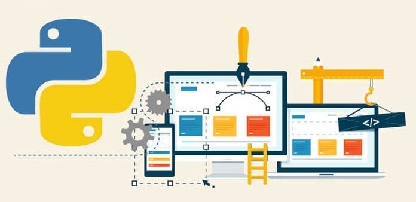
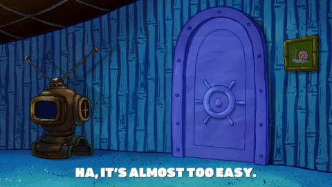

GUI for python programs with multiple windows
Easy to implement GUI framework using python Tkinter library for your python programs
While I was trying to make a GUI for my application, I had many options/projects. Which necessitated me to design a multi-page menu that can hold all pages together and display the appropriate page without retaining the previous page. I discovered that it is easy to make a single page GUI but difficult to find a framework for a multipage menu. Therefore, I created this tutorial which can be a good framework for your python application. The framework of the GUI runs on Python 2 can be easily converted to python 3 with minor changes. The code can be customized according to the needs of your application. This tutorial will be broken down in the following steps:
- Tkinter
- Multi-window GUI
- Making a single executable file
More About
Tkinter
Multi-window GUI
For designing a multi-window GUI in Tkinter, we will first need a container that can hold all the pages together. In the PageContainer class, we can customize the format of the page. For example, the geometry of the page, the logo to display, etc. An empty dictionary is created for frames and we can start the application by initializing a StartPage. The tkraise function is used to display a new page on top of the previous page.
The start page act as the primary page to all other sub-pages. It contains all the selectable projects/pages in the options menu which calls the sub-pages. The page can be customized by changing the font style and size, width and height of the buttons, title of the page, padding of elements in x and y direction, etc. These buttons are packed inside the mainframe of the menu.
Similar, to the Start Page, the sub-pages have a similar format. Nevertheless, when a button is pressed on the sub-page, it calls a function instead of a page. The bottom-most button is used to navigate to the main page.
Each button on the subpage can be customized to call a specific function. These buttons can also be used to take the user input as a parameter and pass it as an argument to the desire function. Moreover, a message box can be displayed to show a warning or instruction to the user.
As you can see from the above example, it is fairly simple to take input from the users and pop-up message window to the user. It is better to take only one input from the user by pressing a button press. Nonetheless, sometimes you don’t wanna clutter the menu with too many buttons (Project 1 menu). Therefore, in the above case, the “data load” button calls data_load_all_proj function, which takes multiple inputs from the user. These inputs can be passed to function (master_data) as an argument.
Making a single executable file
To add further convenience to the user, all the python executable files can be easily converted into a single executable (.exe) file to run on windows. This will convert your entire python program into a user-friendly GUI application. Simply browse to the folder containing the main python executable file and run the following command on your main python file.

I have been searching for a simple GUI for python application and discovered that Tkinter and PyQt are widely used GUI for python. Nevertheless, Tkinter was easy to install in python as it is a standard library in Python. Python with Tkinter is the fastest and easiest way to create GUI applications. PyQt was difficult to install, especially on python 2, therefore I preferred Tkinter. The documentation for the library can be found here.